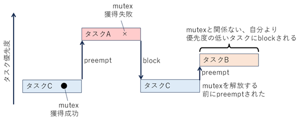
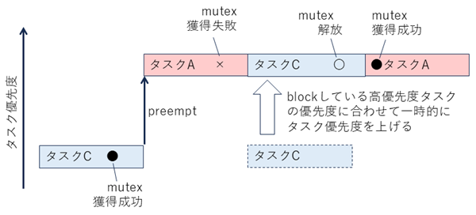

Debug it now, not later.
Being in too much of a hurry can hurt in other situations as
well. Don't ignore a crash when it happens; track it down right away, since it may not
happen again until it's too late. A famous example occurred on the Mars Pathfinder
mission. After the flawless landing in July 1997 the spacecraft's computers tended to reset once a day or so, and the engineers were baffled. Once they tracked down the
problem, they realized that they had seen that problem before. During pre-launch
tests the resets had occurred, but had been ignored because the engineers were working on unrelated problems. So they were forced to deal with the problem later when
the machine was tens of millions of miles away and much harder to fix.
デバッグは今すぐに
忙しすぎるせいで問題が生じるケースはこれ以外にもある。クラッシュが発生したら放置せずにただちに原因をつきとめること。手遅れになるまで再発しない場合があるからだ。有名なのは火星探査機Mars Pathfinderのミッションで発生した事例だろう。1997年7月に無事着陸を果たした後、1日に約1回の割合で宇宙船のコンピュータにリセットが発生するようになったのだ。エンジニアたちは頭を抱えた。問題をつきとめたところ、彼らはその問題に見覚えがあった。そのリセットは発射前のテスト中にも発生していたのに、エンジニアたちが別の問題に忙殺されていたために無視されていたのだ。その結果エンジニアたちは後回しにしてしまった問題に対処しなければならなくなったが、そのときマシンは数千万キロも遠くにあり、修正作業は困難をきわめた。
1997年当時、関心を持って見守っていた人々は、ミッションの舞台裏で起きたドラマの一つを見逃してしまった。ミッション開始から数日後、パスファインダーが気象データの収集を開始して間もなく、宇宙船はシステム全体のリセットに見舞われ、そのたびにデータが失われた。･･･
もつ一つの方法はプライオリティインヘリタンス(優先度継承)という手法である。クリティカルセクションを実行中に自分より優先するプロセスがクリティカルセクションに到達して待ちに入ったら、一時的に実行中のプロセスが待っているプロセスと同じプライオリティになるというアイデアである。そして、クリティカルセクションを終了したところで元のプライオリティに戻る。
VxWorksでは、mutexという名でサポートされている。以前、火星に行ったMars PathfinderのRoverでは、このmutexのプライオリティインヘリタンス(優先度継承)オプションをOFFにしていたため、実際にプライオリティインバージョン(優先度逆転)が起こり、ウォッチドッグによるシステムリセットが発生するトラブルがあったそうである。
(用語)
(優先度逆転)

(優先度継承)
